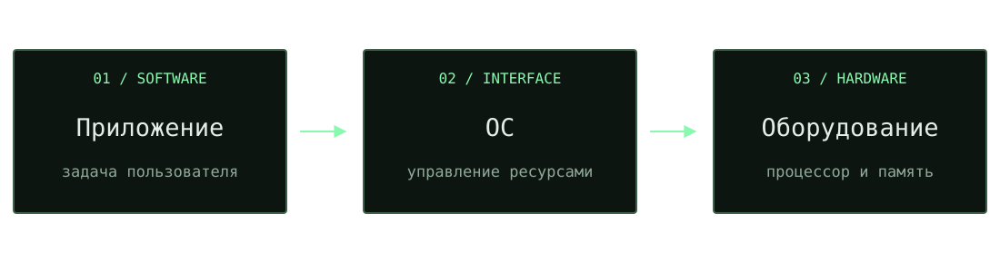

Один слайд.
Одна мысль.
Готовые компоновки, схемы и демонстрации.
Выберите приём — наполните своим материалом.
Заголовок выражает
главную мысль.
Один конкретный пример из опыта студентов.
Короткая связь между наблюдением и новым понятием.
Вывод, который студент должен унести со слайда.
Один процесс.
Несколько состояний.
Сначала предскажем.
Потом проверим.
int answer(void) {
return 6 * 7;
}Компилятор может вычислить константное выражение до запуска программы.
mov eax, 42 retОткрыть Compiler Explorer ↗
Сохранённая иллюстрация x86-64. Для точного повтора закрепите версию компилятора и ссылку Share.
Сложность скрывается
за интерфейсом.

Каждый уровень даёт следующему понятный способ взаимодействия.
Демонстрация
внутри лекции.
Подготовленный конвейер: сборка → тесты → публикация.
Демо загружается по кнопке. Открыть отдельно ↗. Резервный разбор: исходники → сборка → тесты → артефакт.
Три шага
к пониманию.
Наблюдение
Конкретный вопрос, который хочется объяснить.
Модель
Минимальный набор понятий, нужных для ответа.
Проверка
Подготовленный пример и вопрос аудитории.